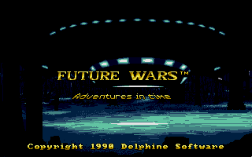
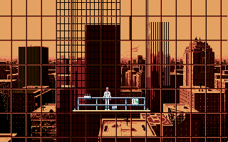

名稱：未來戰爭：時空冒險／時間旅者 (Future Wars: Adventures in Time／Time Travellers: The Menace，英文版) 簡介：Delphine 1989年出品的冒險解謎遊戲，台灣由智冠代理進口 [待補]。

備註：本版為1992年光碟版 保護：光碟版為光碟，磁片版為顏色密碼 備註：安裝時若出現game already installed訊息，將所有磁片內容拷進安裝目錄即可。 檔案：crack.rar = 磁片版破解檔 fw-disk.rar = 磁片版